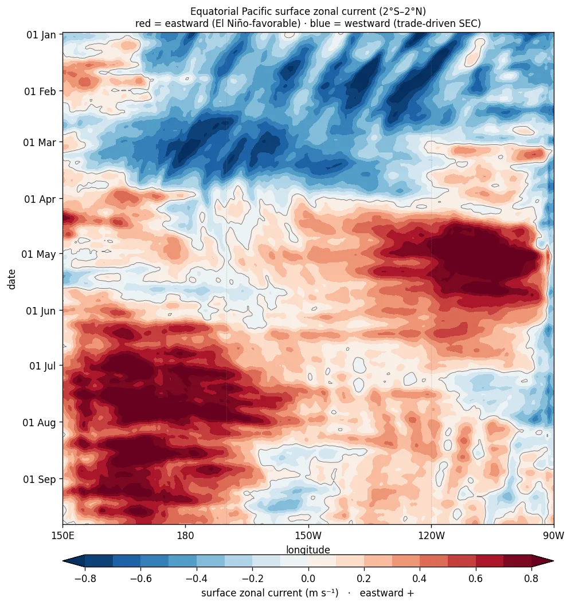

Equatorial Pacific Subsurface Temperature
Depth–longitude cross-sections along the equator from the TAO/TRITON moored-buoy array. The subsurface warm reservoir along the thermocline often leads the surface ENSO signal.
Interactive Cross-Section Explorer
The equatorial depth–longitude section as an explorable chart: hover any point for the exact temperature and anomaly, scrub through the last ~4 months, and switch between the full temperature field and its anomaly versus 1991–2020. Markers show the actual TAO/TRITON moorings the section is built from — ▼ green buoys reported within the last week, ▼ grey are currently silent; the dotted columns mark each buoy's real sensor depths. Everything between moorings is interpolation — the markers show exactly where the ocean is truly being measured.
Equatorial Pacific Subsurface Temperature
Depth–longitude cross-section along the equator (0°N) from the TAO/TRITON moored-buoy array: temperature (top) and its anomaly versus the 1991–2020 average (bottom), 5-day smoothed. The thermocline (here the 26°C and 28°C isotherms, with the 20°C isotherm in solid black and the 10°C isotherm dashed blue when it enters the section) tilts upward toward the east, and subsurface anomalies along it often lead the surface ENSO signal.
Recharge Oscillator — Where Are We in the ENSO Cycle?
The equatorial Pacific's warm water volume (WWV — the volume of water warmer than 20°C, 5°S–5°N, official PMEL index) plotted against the Niño-3.4 SST anomaly. In the recharge-oscillator view of ENSO the system orbits this plane counterclockwise: heat builds along the thermocline (top), discharges into an El Niño (right), leaves the basin depleted (bottom), and recharges through La Niña (left). Because WWV leads Niño-3.4 by two to three seasons, the current vertical position is a genuine glimpse ahead. Grey: every month since 1980; colored loops: benchmark El Niño events; red: the last 24 months.
Tropical Pacific Surface Currents
Daily surface-current fields over the last month for the equatorial Pacific (15°S–15°N, 130°E–80°W) from the Copernicus Marine 1/12° ocean model: speed shaded (blue slow to red fast) with streamlines tracing the flow. The westward South Equatorial Current straddles the equator, the eastward North Equatorial Counter Current sits near 5–10°N, and Tropical Instability Wave eddies ripple along the cold tongue.
Equatorial Zonal Current & the Undercurrent
Depth–longitude slice along the equator (1.5°S–1.5°N), 160°E–90°W, from the Copernicus Marine 1/12° global ocean model: zonal current (shaded, eastward in red) with the 20°C isotherm (the thermocline) in black. It resolves the Equatorial Undercurrent, the eastward subsurface jet at about 50–200 m, the surface-westward South Equatorial Current, and the east–west thermocline tilt. The loop is pinned to start 1 March 2026 and grows daily, so downwelling Kelvin waves (a deepening of the 20°C isotherm with an eastward current pulse) can be followed across the basin.
Equatorial Surface Current: Strip / Hovmöller
Longitude × time strip of the daily surface zonal current averaged 2°S–2°N, 150°E–90°W (same Copernicus Marine model). Red is eastward, blue is westward. The equatorial surface normally flows westward (the trade-driven South Equatorial Current); as El Niño matures, downwelling Kelvin waves drive eastward surges into the east Pacific. Newest day at the bottom.
